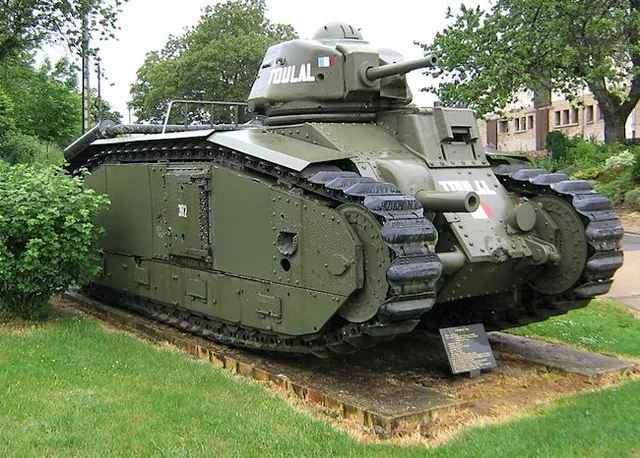

The Char 2C was a French super-heavy tank developed near the end of World War I. Designed by FCM (Forges et Chantiers de la Méditerranée), it was intended to break through fortified German defenses. Although completed after the war in the early 1920s, it remained in service until 1940 and was the largest operational tank ever built. Weighing around 69 tons, the Char 2C had a crew of 12 men, making it extremely complex to operate. Its main armament was a 75 mm gun mounted in a fully rotating turret, along with multiple machine guns placed around the hull for all-around defense. Armor thickness ranged from 22 to 45 mm, strong for WWI standards but outdated by WWII. By the time of the German invasion of France in 1940, the Char 2C was completely obsolete. Most were destroyed by their crews to avoid capture. Though ineffective in modern warfare, it remains historically significant as one of the earliest super-heavy tank concepts.

- Characteristics:
- Type: Heavy tank
- Weight: 32 tons
- Crew: 4
- Gun: 47mm, 75mm
- Speed: 28 km/h